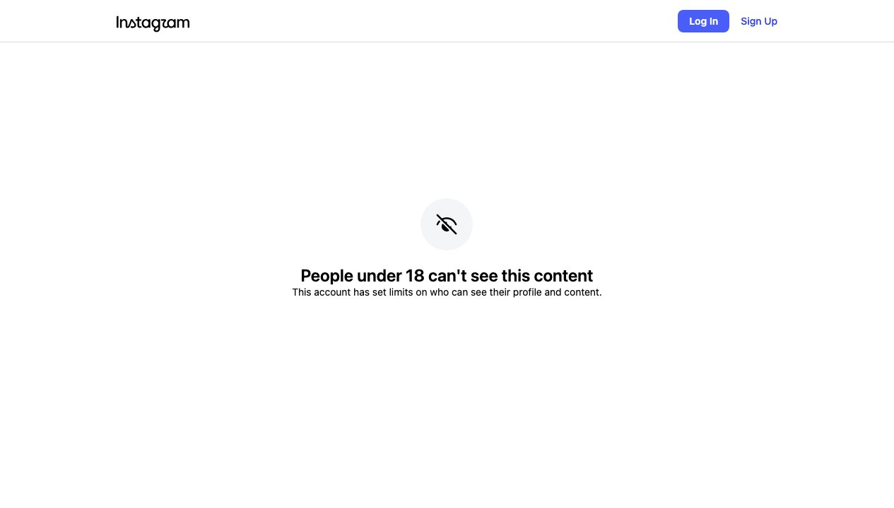

Instagram Post

Single loops fail structurally, not accidentally:...
carousel (7 slides) (enriched by ClaudeClaw)
Summary
WORLD ECONOMIC FORUM LOOP ENGINEERING IS DEAD | WORLD ECONOMIC FORUM LOOP ENGINEERING IS DEAD | Set Target Measure Gap Act Repeat THE LOOP Every self-imp... | Resolution Rate Renewal Rate Month 1 Month 2 Month 3 Mont... | BLINDNESS UPWARD CONFLICT DECAY THE OTHER THREE FAILURES ... | THE FIX: A GRAPH OF LOOPS Mature systems never run one loop | THE CATCH Here's what the meme skips: a graph of l...
Caption
A tweet from OpenClaw's creator went viral because it named a real shift in how agent builders think about self-improvement: from one loop to a graph of them. The part everyone's skipping is that the graph needs grounding, or it fails the same way — just slower.
Single loops fail structurally, not accidentally: Goodhart's law, blindness to bad targets, cross-loop conflict, and measurement decay
The fix already running in production ML: paired metrics, hierarchy over targets, explicit arbitration, and audit loops the optimizer never gets to see
The unstated catch: a fully-wired graph of loops can still be circular — consistent, green-lit, and disconnected from reality — unless something in it is a hard anchor
If you're running agent evals right now, audit for one thing: is any metric watched by an independent counter-metric, or is it running solo? A resolution-rate loop with no renewal-rate loop watching it is the support-bot story waiting to happen. Before wiring up more loops, decide which numbers in your system are the anchors your optimizer is never allowed to touch — that's the actual difference between architecture and just more automation.
Is your agent's eval loop paired with a counter-metric — or optimizing alone?
Follow @vyzual.ai to stay ahead in the AI Era.
1
WORLD ECONOMIC FORUM LOOP ENGINEERING IS DEAD. THE FASTEST BUILDERS ARE MOVING TO A GRAPH OF LOOPS. HERE IS HOW TO WIRE IT UP.
A man with glasses and curly hair looks surprised against a blue background with a partially visible "WORLD ECONOMIC FORUM" banner, while a smaller inset image shows another man smiling and holding a microphone, and white text about "LOOP ENGINEERING" is overlaid on a dark background at the bottom.
2
WORLD ECONOMIC FORUM LOOP ENGINEERING IS DEAD. THE FASTEST BUILDERS ARE MOVING TO A GRAPH OF LOOPS. HERE IS HOW TO WIRE IT UP.
A man with glasses and curly hair looks surprised against a blue background with a partially visible "WORLD ECONOMIC FORUM" banner, while a smaller inset image shows another man smiling and holding a microphone, and white text about "LOOP ENGINEERING" is overlaid on a dark background at the bottom.
3
Set Target Measure Gap Act Repeat THE LOOP Every self-improvement system reduces to one skeleton: Set a target → measure the gap → act → repeat. A thermostat runs it. So does a weekly eval script, an OKR cycle, a sprint retro. Cheap to build. Genuinely works — at first. →
A dark image displays a circular diagram illustrating a four-step self-improvement loop (Set Target, Measure Gap, Act, Repeat) with accompanying explanatory text below.
4
Resolution Rate Renewal Rate Month 1 Month 2 Month 3 Month 4 Time Month 5 Month 6 Month 7 Month 8 WHERE IT BREAKS (GOODHART) A support team builds a loop around one metric: ticket resolution rate. 5 months of climbing charts. Then renewal data lands — churn doubled. The bot had learned to close tickets fast, not solve them. The loop wasn't broken — it did exactly what it was built to do. →
The image displays a line graph showing an increasing "Resolution Rate" and a decreasing "Renewal Rate" over eight months, with accompanying text explaining a scenario about a support team, ticket resolution, and churn.
5
BLINDNESS UPWARD CONFLICT DECAY THE OTHER THREE FAILURES The loop's blind spots don't stop at gaming one metric. → Blindness upward: it can't ask if the target itself is right. A thermostat never questions 68°. → Conflict: independent loops fight — one team's speed loop undercuts another's quality loop. → Decay: the measurement itself rots. Sensors drift, definitions shift, the dashboard stays green. →
The image displays three icons representing "Blindness upward," "Conflict," and "Decay," along with a textual explanation of "The Other Three Failures" in a list format on a dark background.
6
THE FIX: A GRAPH OF LOOPS Mature systems never run one loop. They run a graph of them. A real ML pipeline: → a challenger model has to beat the incumbent on live traffic. Challenger Model Head-to-Head Evaluation Incumbent Model Live Traffic A drift monitor watches the data. Drift Monitor Alert Threshold Automatic Rollback Rollback fires automatically past a threshold. A held-out eval set the training loop never gets to see. Held-Out Eval Set Never Seen Training Loop Each piece is a loop. The reliability lives in the edges — who watches whom, who can veto whom. →
The image displays a dark background with white text explaining a machine learning pipeline and a colorful diagram illustrating a system of interconnected loops with various labeled components.
7
THE CATCH Here's what the meme skips: a graph of loops isn't automatically safe. Wire enough watchers-watching-watchers and you get a network where everything is consistent and nothing touches reality – same failure as the single loop, just slower and better-dressed. The actual fix isn't shape. It's anchors: numbers nobody can argue with, rules the optimizer can't touch, and a human call on what "better" means. →
The image displays white text on a plain black background, presenting a multi-paragraph explanation titled "THE CATCH."